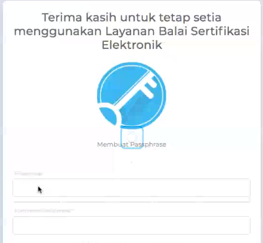

Registrasi eSign¶
Catatan
Menu pendaftaran hanya ditujukan untuk PIMPINAN
Login¶
Silahkan login ke andieni.ui.ac.id dengan akun SSO anda
Peringatan
pastikan akun anda telah terdaftar pada Andieni, hubungi Helpdesk jika anda kesulitan untuk Login
Email OSD¶
Anda akan menerima 3 email dari osd [otoritas sertifikat digital] :
Email pertana - [BSrE] Login Information : berisi informasi akun anda untuk masuk ke portal bsre
Email kedua - [eSign] Pendaftaran Sertifikat : berisi link untuk membuat passphrase
Email ketiga - [BSrE] Certificate Issued : Email ini menandakan sertifikat anda telah terbit dan dapat digunakan pada Andieni
PASSPHRASE¶
Passphrase adalah semacam PIN yang hanya boleh diketahui oleh pemilik tanda tangan digital. Passphrase minimal terdiri dari 8 karakter. Disarankan berupa frase, hindari password umum seperti tanggal lahir, kota lahir
Peringatan
lupa akan passphrase maka sertifikat digital harus di batalkan dan membuat penerbitan baru
Durasi proses penerbitan tanda tangan digital menyesuaikan dengan jumlah penerbitan tanda tangan digital di bagian layanan dari BSrE. Apabila anda belum mendapatkan ketiga atau salah satu dari email tersebut silahkan kontak helpdesk Andieni.